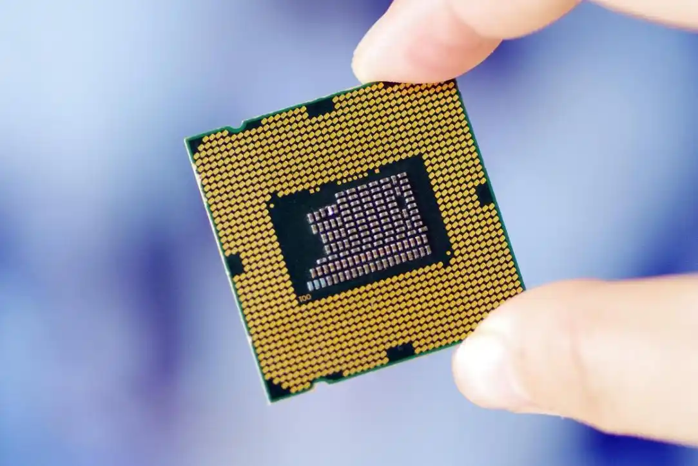

今日要闻
1.量子计算机取得突破性进展
这次中国自主量子计算机“本源悟空”全球首次运行十亿级AI微调大模型，标志着国内已经开始通过量子-经典混合框架，将大模型参数优化转化为量子退火问题，实现量子计算机对AI大模型任务的协助。
这将有助于国产AI大模型的技术落地。同时，由于量子计算机的算力优势，一旦相关的技术壁垒被攻克，国产算力的发展将不再受制于美西方的芯片管制措施。除此之外，量子计算还会优先处理高维参数优化、注意力机制等计算密集型任务，与经典算力形成互补。
结合国内现有的AI芯片产业，两者就可以发挥出1+1大于2的能力。但就目前而言，国用量子计算机在商用领域仍需要解决诸多问题。比如，需将量子比特数从72提升至千级规模，同时将量子门保真度从99.5%提高至99.99%，涉及超导材料、误差校正等关键技术攻关。
量子计算需与经典体系深度耦合，推动编译器、开发工具链等生态成熟，降低应用门槛等。但就目前而言，国内在量子计算机领域的确已经开始领先全球，叠加美方近段时间的关税措施，其综合研发实力已经大不如之前。
人工智能在医疗领域的最新应用
2.AI辅助诊断准确率突破95%
近日，美国科技公司DeepHealth宣布，其研发的AI医疗诊断系统在乳腺癌筛查中的准确率超过95%，远超人类医生的平均水平。该系统通过深度学习技术，能够快速分析医学影像，识别早期癌症病变，并提供诊断建议。
目前，DeepHealth的AI系统已在美国多家医院试点应用，未来有望在全球范围内推广。专家表示，AI技术的引入将极大提高医疗诊断的效率和准确性，为患者带来更好的治疗效果。
"这是医疗AI发展的里程碑" — 引自《科技报告》主编WSWW
3.行业数据
| 领域 | 投资额（亿美元） | 增长率 |
|---|---|---|
| 人工智能 | 580 | +42% |
| 量子计算 | 120 | +215% |
| 生物科技 | 80 | +120% |
| 机器人 | 100 | +150% |
| VR/AR | 20 | +100% |
| 自动驾驶 | 10 | +120% |
4.读者互动
您最关注的科技领域是？
5.科技大讲堂
《未来十年科技趋势》讲座节选